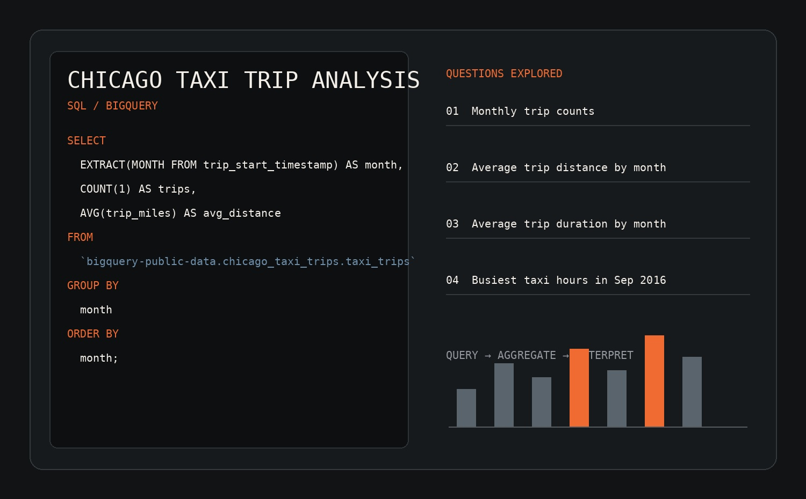

COMPLETED · SQL
Chicago Taxi Trip Analysis
A SQL mini-project using the BigQuery public Chicago Taxi Trips dataset to investigate trip activity and temporal patterns.

Project objective
Build practical SQL fluency using a large public dataset and answer clearly defined analytical questions.
Questions explored
- Monthly trip counts
- Average trip distance by month
- Average trip duration by month
- Busiest taxi hours in September 2016
Approach
Queried the public dataset in BigQuery, grouped and aggregated trip records, checked schema fields and refined queries iteratively.
Next addition
A Power BI dashboard will be added once complete, together with a concise visual summary of findings.